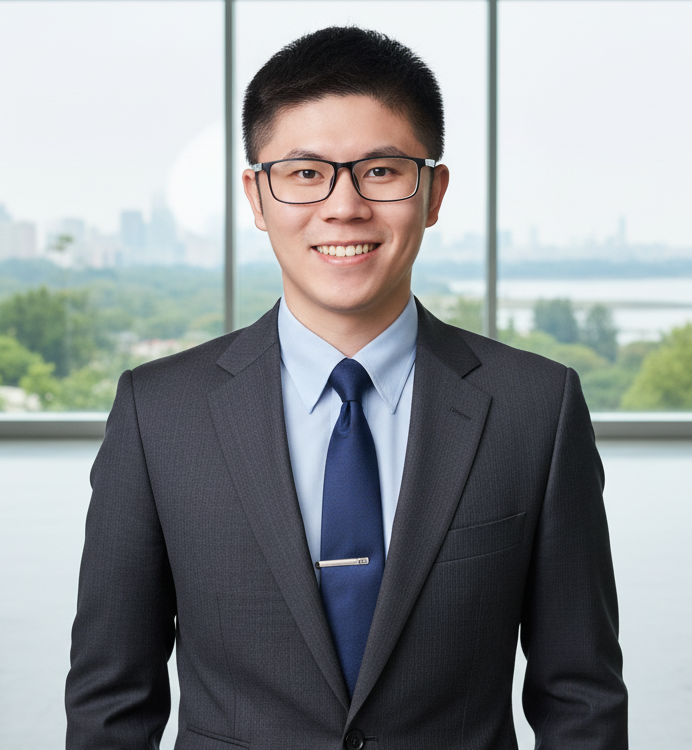

Expert Algorithm Engineer specializing in large-scale Computer Vision (Swin Transformer, NASNet) and NLP (BERT, Custom LLMs). Uniquely positioned to develop robust Multimodal AI architectures. Proven track record of bridging research and production — translating Python prototypes into high-performance C++ deployments on Linux. Experienced in designing multi-task learning systems for fine-grained recognition to drive scalable marketplace intelligence.
Fine-tuned LLaMA 3 using LoRA & PEFT for Buddhist knowledge reasoning. Deployed Buddhism-Llama3-GGUF on Hugging Face with advanced quantization for high-performance C++ inference via llama.cpp on resource-constrained hardware. Used Unsloth framework to significantly reduce VRAM consumption.
Engineered 26+ price/volume/risk alphas with factor orthogonalization and cost-aware long-short portfolio construction. Turnover control improved risk-adjusted returns; ranked top 20% globally in IQC 2025 Stage 1.
Built an intelligent real-time conversational agent using ChatGPT API, Django, and LineBot. Engineered scalable backend endpoints to process natural language queries for financial intelligence use cases.